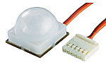
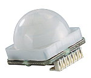

Robbert
Mattijs
Passive InfraRed Sensors
van Mattijs, Stef en Robbert Mientki
januari 2002
| Lego-Knex
Robbert Mattijs |
Lego Mindstorms
Passive InfraRed Sensors van Mattijs, Stef en Robbert Mientki januari 2002 |
TechnoStuff |
| ConradBestnr.
172500-89
1 : € 17,87 vanaf 3 stuks : €
16,11
vanaf 25 stuks : €
14,57
Productinformatie De compacte SMD-module
heeft ondanks de kleine afmetingen kenmerken die een universele toepasbaarheid
garanderen. Uitermate grote, in vier stappen instelbare, gevoeligheid,
geïntegreerde venstercomparator, TTL- en CMOS-compatibele open-collector-uitgang
die ook rechtstreeks LED’s of relais aan kan sturen. Bovendien een analoge
uitgang voor eigen bepalingsschakelingen.
|

 |
Omvang levering: Geteste module met lens, maar zonder aansluitkabel. |